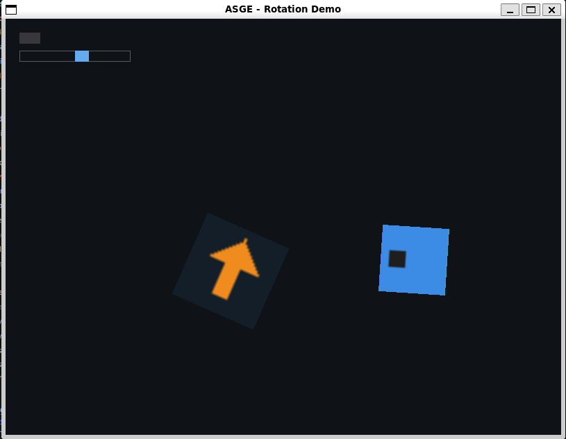

← All examples
Rendering
Sprite Rotation
Transform::m_Rotation, applied for real
Showcases Transform::m_Rotation actually being applied by RenderSystem: a plain rotating sprite (the whole-texture DrawTextureAffine path) alongside a rotating animated sprite (the source-rect DrawTextureAffine overload — rotated and cropped to its current animation frame at once).
Both entities just accumulate their own angular speed into their own Transform::m_Rotation each Update() — there's no engine-side "spin" component, it's ordinary per-entity gameplay state living in the demo itself.
Controls
- LEFT / RIGHT Adjust the plain sprite's spin speed (can reverse direction)
- SPACE Pause/resume both sprites
- R Reset

Run it yourself
build just this example
cmake --build --preset windows-debug --target rotation_demo
# binary lands under bin/ (e.g. bin/Debug/rotation_demo.exe on Windows)See Installation for the full build setup.
Source
examples/rotation_demo/Game.hpp
#pragma once
#include <ASGE/ASGE.hpp>
/**
* @brief Showcases Transform::m_Rotation actually being applied by
* RenderSystem: a plain rotating sprite (the whole-texture
* DrawTextureAffine path) alongside a rotating *animated* sprite (the
* source-rect DrawTextureAffine overload — rotated and cropped to
* its current animation frame at once).
*
* Both entities just accumulate their own angular speed into their own
* Transform::m_Rotation each Update() — there's no engine-side "spin"
* component, this is ordinary per-entity gameplay state living in the demo.
* LEFT/RIGHT adjust the plain sprite's spin speed (and can reverse its
* direction), SPACE pauses/resumes both, R resets everything.
*/
class RotationDemoState final : public asge::game::state::IGameState<int>
{
asge::ecs::Registry& m_Registry;
asge::game::asset::AssetManager& m_Assets;
asge::ecs::Entity m_Spinner{ asge::ecs::Entity::Null() }; // whole-texture rotation
asge::ecs::Entity m_AnimatedSpinner{ asge::ecs::Entity::Null() }; // rotation + cropped animation frame
float m_SpinnerSpeed{ 1.5f }; // radians/second; LEFT/RIGHT-adjustable, can go negative
bool m_Paused{ false };
float m_LastDeltaTime{ 0.0f }; // Captured in Update(), consumed by Render()'s RenderPipeline call
void SpawnEntities();
void UpdateRotation(float inDeltaTime);
void AdjustSpinnerSpeed(float inDelta);
void Reset();
void RenderHud(asge::video::IRenderer& inRenderer) const;
public:
RotationDemoState(asge::ecs::Registry& inRegistry, asge::game::asset::AssetManager& inAssets);
[[nodiscard]] std::optional<asge::game::state::Transition<int>>
Update(float inDeltaTime, asge::input::InputState const& inInput) override;
void Render(asge::video::IRenderer& inRenderer) override;
void OnSystemEvent(asge::event::SystemEvent const& inSysEvent) override;
};
class RotationDemoGame final : public asge::game::Game<int>
{
public:
explicit RotationDemoGame(asge::video::IRenderer& inRenderer, asge::audio::AudioDevice& inAudioDev);
protected:
[[nodiscard]] std::unique_ptr<StateType> CreateState(int inId) override;
};
examples/rotation_demo/Game.cpp
#include "Game.hpp"
#include <algorithm>
#include <cmath>
namespace
{
using asge::input::Keycode;
using asge::media::RGBA_Color;
using asge::game::components::Animation;
using asge::game::components::Sprite;
using asge::game::components::Transform;
constexpr float kPi = 3.14159265358979323846f;
constexpr float kTwoPi = kPi * 2.0f;
constexpr char const* kArrowPath = "textures/arrow.bmp";
constexpr char const* kSheetPath = "textures/spritesheet.bmp";
constexpr char const* kClipPath = "textures/walk.toml"; // asset::FrameTable meta-file -- see assets/
constexpr float kArrowScale = 4.0f; // draws the 32x32 arrow at 128x128
constexpr float kSheetScale = 3.0f; // draws each 32x32 cell at 96x96
constexpr float kSpinnerX = 260.0f;
constexpr float kAnimatedSpinnerX = 540.0f;
constexpr float kSpinY = 300.0f;
constexpr float kAnimatedAngularSpeed = -0.9f; // radians/second, fixed -- just for visual contrast with the player-adjustable spinner
constexpr float kFrameDuration = 0.12f;
constexpr float kSpeedStep = 0.5f; // radians/second per LEFT/RIGHT press
/** @brief Wraps inRadians into [0, 2*pi) -- keeps Transform::m_Rotation from growing unbounded over a long-running demo. */
float WrapAngle( float inRadians ) noexcept
{
float wrapped = std::fmod( inRadians, kTwoPi );
if ( wrapped < 0.0f ) wrapped += kTwoPi;
return wrapped;
}
}
RotationDemoState::RotationDemoState(
asge::ecs::Registry& inRegistry, asge::game::asset::AssetManager& inAssets
)
: m_Registry(inRegistry), m_Assets(inAssets)
{
SpawnEntities();
}
void RotationDemoState::SpawnEntities()
{
auto spinner = m_Registry.CreateEntity();
if ( !spinner ) { spinner.LogError(); return; }
m_Spinner = spinner.Value();
m_Registry.AddComponent<Transform>( m_Spinner,
Transform{ .m_X = kSpinnerX, .m_Y = kSpinY, .m_ScaleX = kArrowScale, .m_ScaleY = kArrowScale } );
// m_Texture stays null until Render()'s AssetManager::ResolveAssets call.
m_Registry.AddComponent<Sprite>( m_Spinner, Sprite{ .m_VirtualPath = kArrowPath } );
auto animated = m_Registry.CreateEntity();
if ( !animated ) { animated.LogError(); return; }
m_AnimatedSpinner = animated.Value();
m_Registry.AddComponent<Transform>( m_AnimatedSpinner,
Transform{ .m_X = kAnimatedSpinnerX, .m_Y = kSpinY, .m_ScaleX = kSheetScale, .m_ScaleY = kSheetScale } );
m_Registry.AddComponent<Sprite>( m_AnimatedSpinner, Sprite{ .m_VirtualPath = kSheetPath } );
m_Registry.AddComponent<Animation>( m_AnimatedSpinner, Animation{
.m_ClipPath = kClipPath, .m_FrameDuration = kFrameDuration
} );
}
void RotationDemoState::UpdateRotation(float inDeltaTime)
{
if ( m_Paused ) return;
if ( auto result = m_Registry.GetComponent<Transform>( m_Spinner ) )
{
Transform& t = result.Value().get();
t.m_Rotation = WrapAngle( t.m_Rotation + m_SpinnerSpeed * inDeltaTime );
}
if ( auto result = m_Registry.GetComponent<Transform>( m_AnimatedSpinner ) )
{
Transform& t = result.Value().get();
t.m_Rotation = WrapAngle( t.m_Rotation + kAnimatedAngularSpeed * inDeltaTime );
}
}
void RotationDemoState::AdjustSpinnerSpeed(float inDelta)
{
m_SpinnerSpeed += inDelta;
}
void RotationDemoState::Reset()
{
m_Paused = false;
m_SpinnerSpeed = 1.5f;
for ( auto entity : { m_Spinner, m_AnimatedSpinner } )
{
if ( auto result = m_Registry.GetComponent<Transform>( entity ) )
{
result.Value().get().m_Rotation = 0.0f;
}
}
}
void RotationDemoState::RenderHud(asge::video::IRenderer &inRenderer) const
{
// "PAUSED" indicator (top-left): lit while rotation is frozen.
inRenderer.DrawRect(
asge::math::Rect{ 20.0f, 20.0f, 30.0f, 16.0f },
m_Paused ? RGBA_Color{ 240, 120, 60, 255 } : RGBA_Color{ 55, 55, 60, 255 },
true
);
// Spin-speed bar (below it): fill tracks m_SpinnerSpeed's magnitude,
// centered so a negative (reversed) speed fills from the middle leftward.
constexpr float kMaxSpeed = 6.0f;
asge::math::Rect const track{ 20.0f, 46.0f, 160.0f, 16.0f };
inRenderer.DrawRect(track, RGBA_Color{ 90, 90, 100, 255 }, false);
float const half = track.m_Width * 0.5f;
float const fill = std::clamp( m_SpinnerSpeed / kMaxSpeed, -1.0f, 1.0f ) * half;
asge::math::Rect const bar = fill >= 0.0f
? asge::math::Rect{ track.m_X + half, track.m_Y, fill, track.m_Height }
: asge::math::Rect{ track.m_X + half + fill, track.m_Y, -fill, track.m_Height };
inRenderer.DrawRect(bar, RGBA_Color{ 100, 170, 240, 255 }, true);
}
std::optional<asge::game::state::Transition<int>>
RotationDemoState::Update(float inDeltaTime, [[maybe_unused]] asge::input::InputState const &inInput)
{
UpdateRotation( inDeltaTime );
// AnimationSystem itself runs inside RenderPipeline (see Render()) --
// same reasoning as animation_demo's m_LastDeltaTime capture.
m_LastDeltaTime = inDeltaTime;
return std::nullopt;
}
void RotationDemoState::Render(asge::video::IRenderer &inRenderer)
{
inRenderer.Clear({ 15, 18, 22, 255 });
// Deferred-loads Sprite::m_Texture/Animation::m_Clip on first use, same
// as animation_demo -- no hand-rolled "is the texture attached yet"
// bookkeeping needed here.
m_Assets.ResolveAssets( m_Registry, inRenderer );
// The one call this whole demo exists to show off: RenderSystem now
// routes a non-zero Transform::m_Rotation through DrawTextureAffine
// (via components::SpriteGetDrawCorners) instead of always drawing
// axis-aligned.
asge::game::systems::RenderPipeline( m_Registry, inRenderer, m_LastDeltaTime );
RenderHud( inRenderer );
}
void RotationDemoState::OnSystemEvent(asge::event::SystemEvent const &inSysEvent)
{
auto const* keyEvent = inSysEvent.TryGet<asge::event::KeyboardEvent>();
if ( !keyEvent ) return;
if ( keyEvent->s_Type != asge::event::EventType::KEYBOARD_KEY_PRESSED ) return;
if ( keyEvent->s_Repeat ) return; // edge-triggered: one step/toggle per physical press
if ( keyEvent->s_Keycode == Keycode::LEFT ) AdjustSpinnerSpeed( -kSpeedStep );
else if ( keyEvent->s_Keycode == Keycode::RIGHT ) AdjustSpinnerSpeed( kSpeedStep );
else if ( keyEvent->s_Keycode == Keycode::SPACE ) m_Paused = !m_Paused;
else if ( keyEvent->s_Keycode == Keycode::R ) Reset();
}
RotationDemoGame::RotationDemoGame(asge::video::IRenderer& inRenderer, asge::audio::AudioDevice& inAudioDev)
: Game(inRenderer, inAudioDev)
{
// ASGE_ROTATION_DEMO_ASSET_DIR is injected by CMakeLists.txt; mounted
// once so textures are loaded by virtual path instead of a hardcoded OS
// path baked into this demo.
auto mountResult = m_Vfs.Mount("textures", ASGE_ROTATION_DEMO_ASSET_DIR);
if ( !mountResult ) mountResult.LogError();
SetInitialState(0);
}
std::unique_ptr<RotationDemoGame::StateType> RotationDemoGame::CreateState([[maybe_unused]] int inId)
{
return std::make_unique<RotationDemoState>( m_SceneManager.GetRegistry(), m_Assets );
}